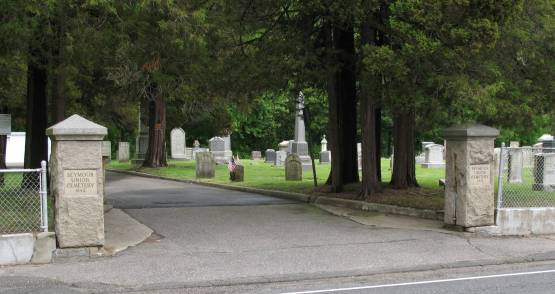

|
|
|
| Union
Cemetery Derby Avenue Seymour, New Haven, CT |
||||
|

|
|
||
 |
NAME |
|
AGE |
|
1934 |
|
Baldwin,
William E. |
24
Jan 1903 |
69 |
PHOTO | 1934 |
|
Bartlett,
George L. |
19
Mar 1914 |
72 |
PHOTO | 1934 |
| Bassett, Augusta Ann (Lake) - 1st wife of Captain Julius | 3
Apr 1851 |
38 |
PHOTO | 1934 | |
|
Bassett,
Captain Julius - son of Jared & Sally Brewster (Johnson) |
8
Mar 1865 |
48 |
PHOTO | 1934 |
|
Bassett,
Lorenzo N. |
1870 |
47 |
PHOTO | 1934 |
| Bassett, Sarah (Lum) - 3rd wife of Captain Julius | 27
Oct 1868 |
36 |
PHOTO | 1934 | |
| Bassett, Sarah E. - daughter of Captain Julius & Augusta Ann (Lake) | 1902 |
57 |
PHOTO | 1934 | |
| Bassett, Sarah F. (Scott) - wife of Lorenzo N. | 1896 |
72 |
PHOTO | 1934 | |
| Bay,
Catherine (White) - wife of
Charles G. |
2
May 1912 |
62 |
PHOTO | 1934 | |
|
Bay,
Charles G. |
11
May 1914 |
80 |
PHOTO | 1934 |
|
Blake,
William |
18
Dec 1881 |
PHOTO | 1934 | |
|
Cee,
Norman |
25
Sep 1929 |
34 |
PHOTO | |
|
Chamberlain,
Horatio S. - son of John & Sarah |
1922 |
84 |
PHOTO | 1934 |
| Chamberlain, Nancy M. (Smith) - wife of Horatio S. | 1903 |
62 |
PHOTO | 1934 | |
| Church,
Annie E. - daughter of Henry & Lucinda (Riggs) |
1858 |
4 |
PHOTO | ||
| Church, Eben Riggs - son of Henry & Lucinda (Riggs) | 1930 |
69 |
PHOTO | ||
| Church, Henry - son of Sheldon & Laura E. (Lines) | 2
Aug 1888 |
61 |
PHOTO | ||
| Church, Lucinda (Riggs) - wife of Henry | 5
May 1906 |
77 |
PHOTO | ||
|
Cirkoth,
Sergeant William |
24
Apr 1968 |
60 |
PHOTO | |
|
Davies,
Harry W. |
24
May 1933 |
34 |
PHOTO | 1934 |
|
Ehmann,
William A. |
23
Nov 1934 |
41 |
PHOTO | |
|
Ford, Clark E. | 4
Jul 1898 |
73 |
PHOTO | 1934 |
|
French,
John Wesley |
10
Aug 1887 |
PHOTO | 1934 | |
|
Hartshorn,
Napoleon B. |
17
Feb 1878 |
PHOTO | 1934 | |
| Holbrook,
Emily (Tomlinson) - wife of
Captain Philo |
24
Nov 1859 |
48 |
PHOTO | 1934 | |
| Holbrook, Harriet A. (Baldwin) - wife of Captain Philo | 23
Apr 1926 |
90 |
PHOTO | ||
| Holbrook,
Captain Philo - son of Richard & Grace (Hawkins) |
17
Nov 1878 |
76 |
PHOTO | 1934 | |
| Houghtaling,
Charles D. |
PHOTO | ||||
| Houghtaling,
Florence A. |
1995 |
84 |
PHOTO | ||
| Houghtaling, H. Elmira - wife of Charles D. | 5
Mar 1888 |
40 |
PHOTO | ||
|
Kelly, Jerald Lee | 8
Jan 1980 |
39 |
PHOTO | |
|
Kenney,
Walter S. - son of Lorenzo Dow & Amelia Roxana (Kimberly) |
8
Jan 1905 |
66 |
PHOTO | 1934 |
| Ladd, Sarah J. (Johnson) - wife of Theodore S. | 24
Mar 1906 |
74 |
PHOTO | 1934 | |
|
Ladd,
Theodore S. |
25
Jun 1888 |
57 |
PHOTO | 1934 |
| Miles,
Theophilus - son of Theophilus & Mary (Meeker) |
15
Mar 1849 |
70 |
PHOTO | 1934 | |
| Moshier,
Julia (Holbrook) - wife of
Howard F. |
28
Jun 1857 |
19 |
PHOTO | 1934 | |
|
Owens,
John |
23
Sep 1891 |
PHOTO | 1934 | |
|
Owens,
John |
21
Jun 1907 |
71 |
PHOTO | 1934 |
|
Riggs,
Corporal John Harpin |
17
Apr 1926 |
85 |
PHOTO | 1934 |
|
Robbins,
Captain Nehemiah |
3
Sep 1852 |
60 |
PHOTO | 1934 |
| Roberts,
Elizabeth B. - daughter of John & Anna (Owens) |
8
Oct 1934 |
61 |
PHOTO | 1934 | |
| Roberts, Esther N. - daughter of John & Anna (Owens) | 1
Oct 1928 |
55 |
PHOTO | 1934 | |
|
Roberts,
John - son of Simeon & Esther |
7
Nov 1914 |
74 |
1934 | |
|
Runnalls,
Sergeant George E. |
9
Mar 1953 |
60 |
PHOTO | |
|
Sargent,
William M. |
3
Aug 1916 |
73 |
PHOTO | 1934 |
|
Senger,
Sergeant Emil |
21
Apr 1918 |
22 |
PHOTO | 1934 |
| Smith, Jane M. (Wooster) - wife of Captain Wilbur Watson | 4
May 1899 |
70 |
PHOTO | 1934 | |
| Smith, Jane Wooster - daughter of Captain Wilbur Watson & Jane M. (Wooster) | 21
May 1915 |
59 |
PHOTO | 1934 | |
|
Smith, Captain Wilbur Watson - son of Reverend Sylvester & Henrietta (Cadwell) | 16
Oct 1908 |
79 |
PHOTO | 1934 |
|
Thayer,
Reuben W. |
18
Nov 1905 |
70 |
PHOTO | 1934 |
|
Truesdale,
Lucius B. - son of Lorenzo & Caroline E. (Bunnell) |
12
Sep 1864 |
18 |
PHOTO | 1934 |
|
White, Corporal Myron H. | 29
Jul 1891 |
68 |
PHOTO | 1934 |
|
Whiteley, Earl R. - son of William James & Linnie (Sargent) | 15
Nov 1945 |
34 |
PHOTO | |
| Whiteley, Julia M. - daughter of William James & Linnie (Sargent) | 9
Sep 1967 |
73 |
PHOTO | ||
| Whiteley, Linnie (Sargent) - wife of William James | 4
Mar 1952 |
76 |
PHOTO | ||
| Whiteley,
William James |
22
Aug 1958 |
91 |
PHOTO | ||
| Whiting,
Aurelia (Sherman) - wife of
William Samuel |
6
Apr 1884 |
74 |
PHOTO | 1934 | |
| Whiting, William Samuel | 2
Aug 1883 |
79 |
PHOTO | 1934 | |
|
Wyant,
Captain Wilson |
31
Mar 1890 |
70 |
PHOTO | 1934 |
| Home Cemeteries Genealogy Library Email |